Twitter
Facebook
YouTube
Vimeo
LinkedIn
About
Press
Terms & Copyright
Photography
Design+Development
Live Events
Portfolio
Middlemen
fashion · people · video
Looping Portraits
people · video
Team Chuubie
people · projects
Sommertraum
fashion
L’altro
people
St. John the Divine
fashion
Meta e Mezzo
fashion
Cocoon – Heather Huey
fashion · still-life
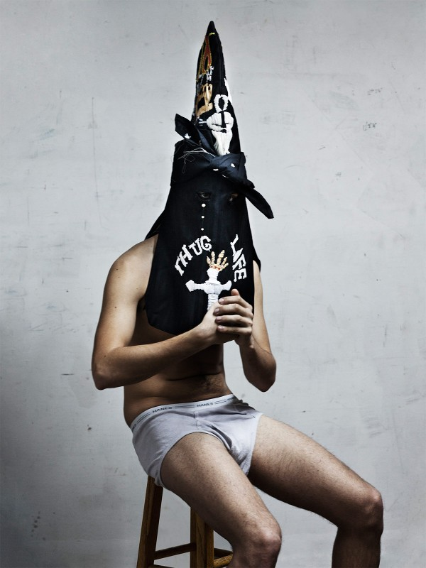
Erik Bergrin Hoods
fashion · still-life
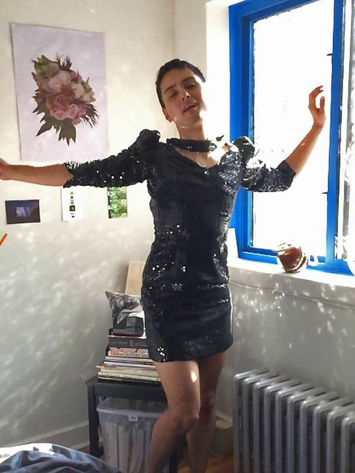
On a whim with Stevie – No. 2
people · projects · video
On a whim with Kayu – No. 1
people · projects · video
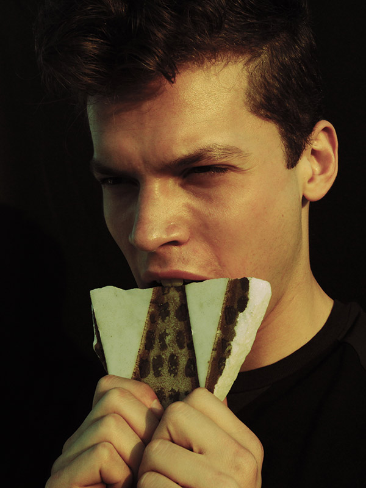
Brooklyn Framed
people
The Meatpacking, New York City
fashion · people
Louis Galloway
fashion · people
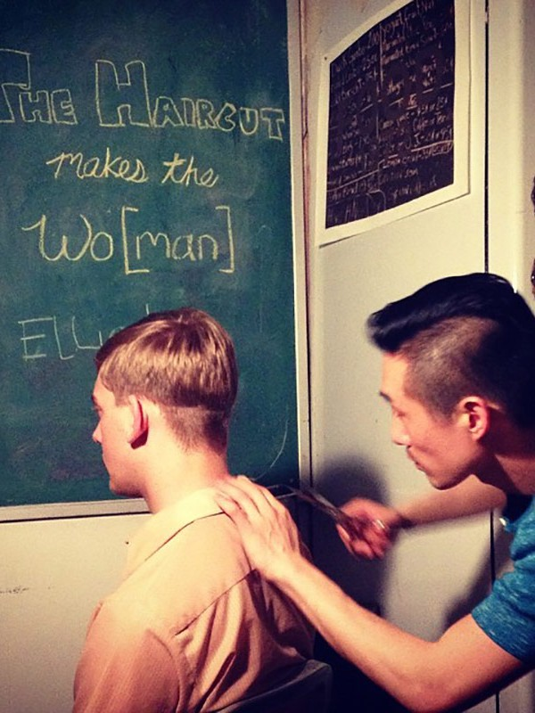
The Haircut Makes the Wo[man]
people · projects
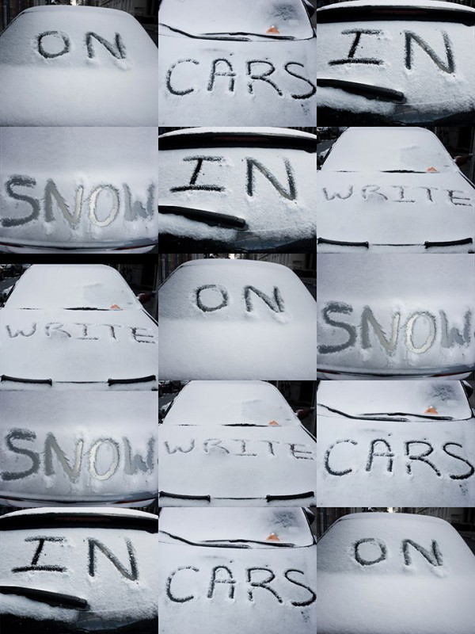
Write On Cars In Snow
projects
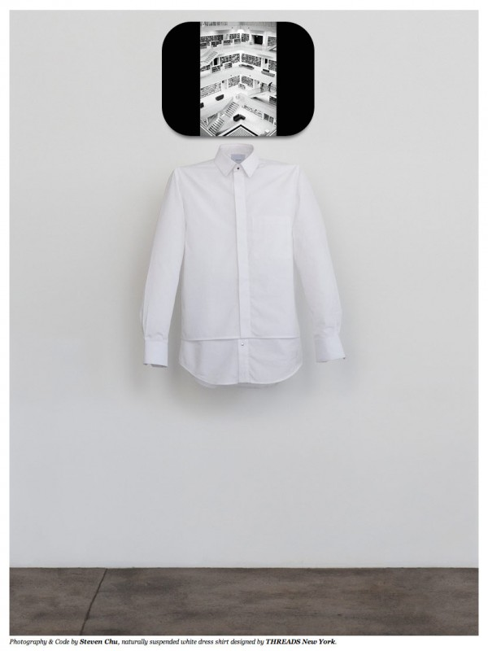
Threads by Claude Grant
fashion · still-life
Heather Huey – Asylum
fashion · still-life
Freier Fall
fashion
Effie Liu
people
Jlynn
fashion
Micky Ayoub
fashion
Nowhere Boys
fashion · projects
FLOAT
fashion
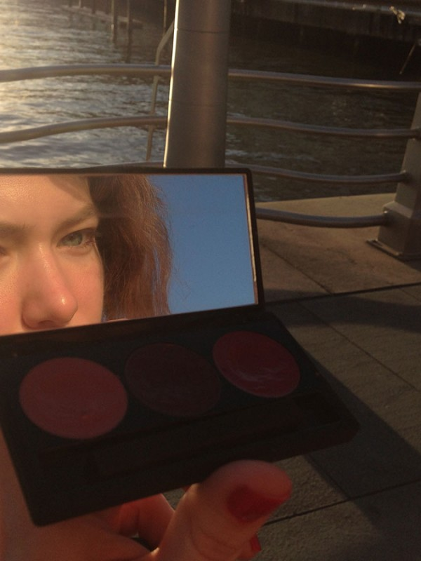
Archer by the Waterfront
people · video
Olympia, Greece 2012
video
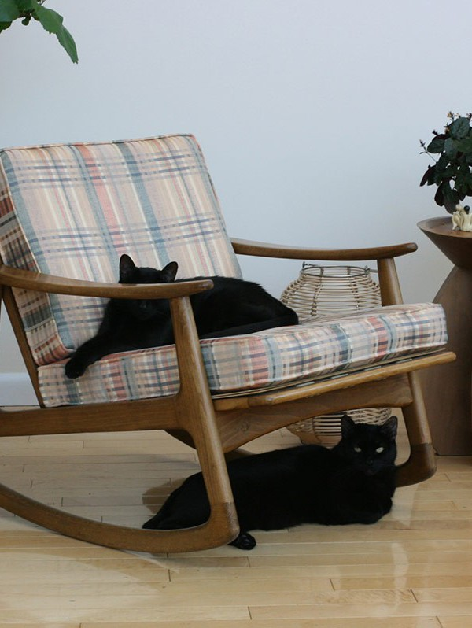
Contrapposto
still-life
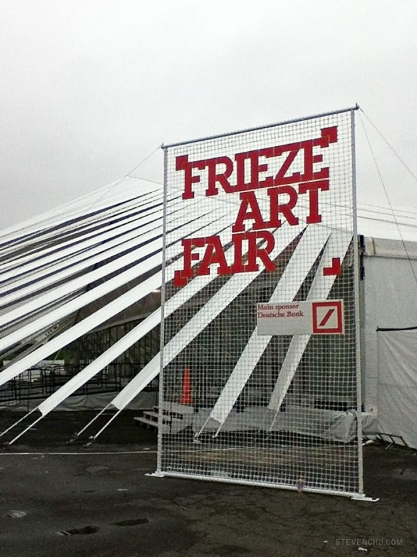
Frieze New York 2012
projects
The Greenery
fashion
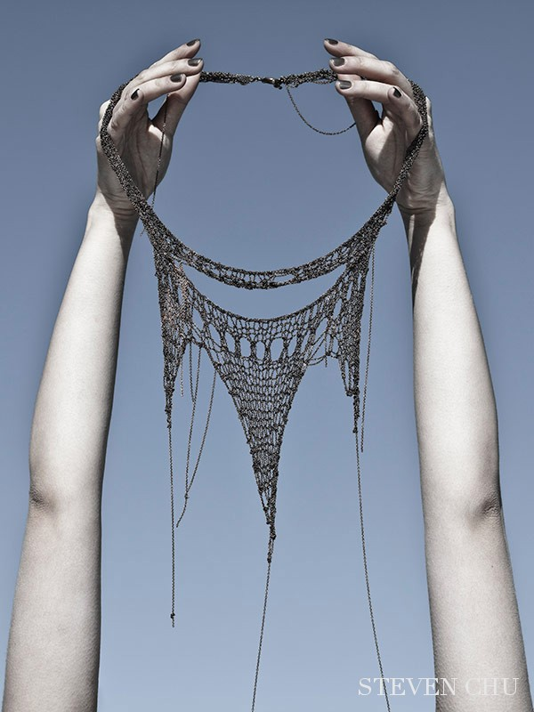
Langoliers Jewelry NYC
fashion · still-life
Eric Ramos – Narcissus
fashion
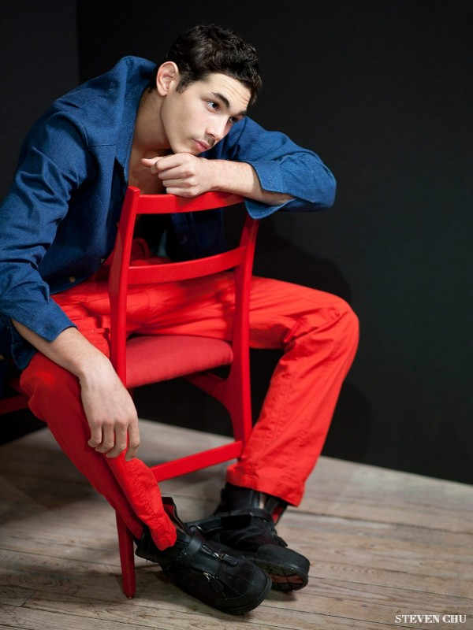
Eric Ramos on Gio Ponti
fashion
Herieth Paul
fashion
Enjoy The Silence – Antonella Graef
fashion
The Woman in the Dark
fashion
U.S. Olympic Fencer Portrait
people
Frozen Beauty
fashion
Melodie Monrose
fashion
Eric Ramos
people
Robert Molnar
people
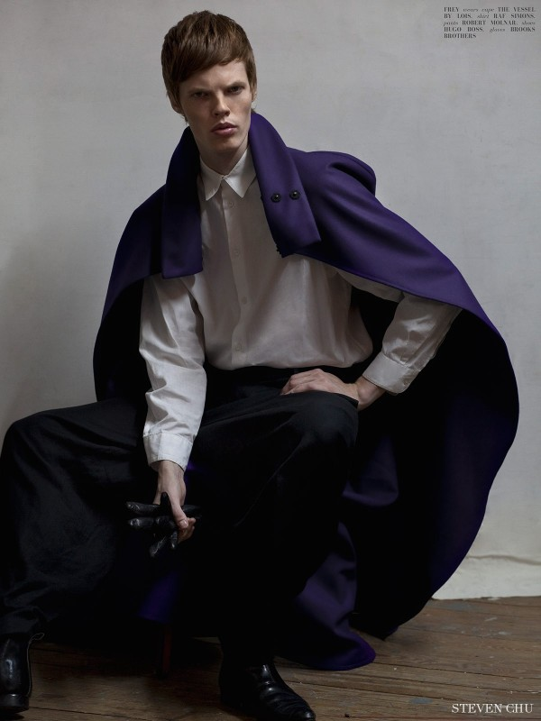
Academy of the Frozen
fashion
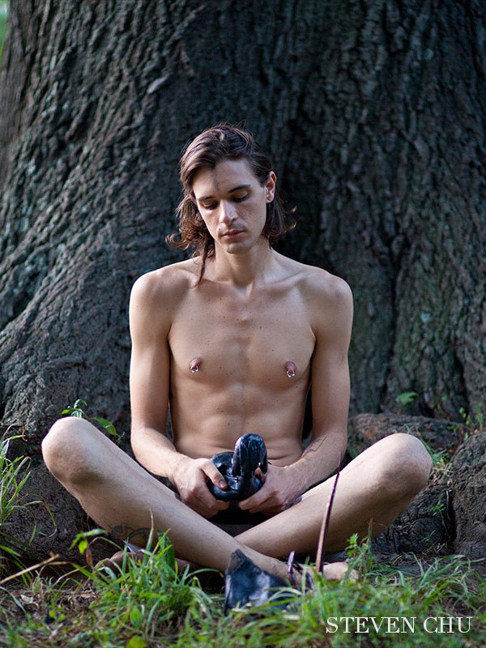
Erik Bergrin
people
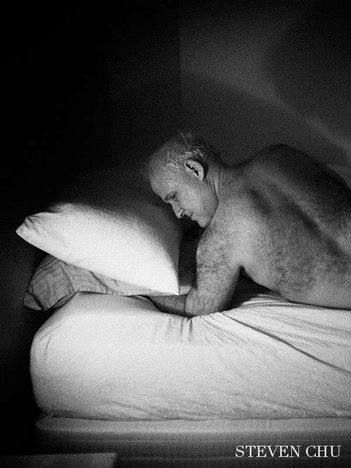
Bruce Benderson
people
Silviu Tolu
fashion